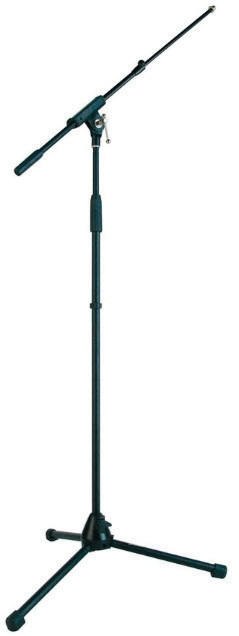
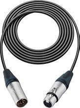
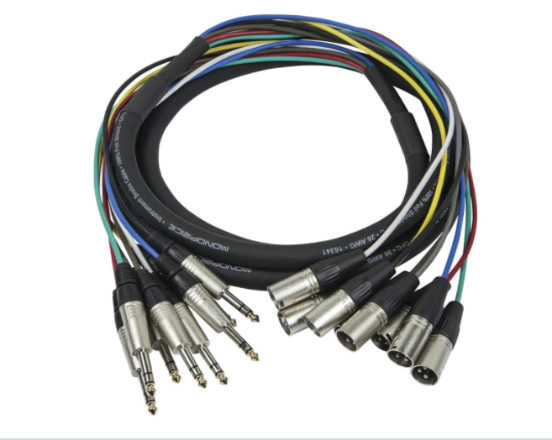

(i) Microphone stand: A microphone
stand is a free-standing mount for a microphone.
It allows the microphone to be positioned in the studio without requiring a person to hold it.
A microphone stand can be adjusted by shortening or lengthening it according to the height of the user.
Figure 7.12 shows an example of microphone stand.

(j) Cables: These are insulated wires used for transmitting electric signals.
The studio cables transfer signals from different sources to an audio mixer, audio interface (sound card) or studio monitors.
Figure 7.13 shows examples of cables used in music recording studios.


Activity 7.3
Perform the following tasks while at a music recording studio:
(i) List the equipment and tools available in the studio.
(ii) Determine how each instrument is connected to others.
(iii) Determine how sound travels from the microphone and MIDI controller to the studio monitors and headphones.
(iv) Name the specific software used in music production.